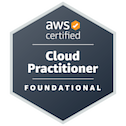

Hello, I'm
Cloud & Backend Developer |
AWS Certified | Node.js | System Administration | Observability
I'm a Backend Developer and Junior System Administrator based in Fort McMurray, Alberta, Canada. I have 4+ years of experience building backend systems, managing AWS infrastructure, and automating operational workflows using Node.js.
I specialize in cloud operations, observability (Datadog, Kibana, CloudWatch), REST API development, and troubleshooting complex production issues. AWS Certified Cloud Practitioner.
Node.js, JavaScript (ES6+), REST APIs, Java, C#, Dart
Datadog, Kibana, Amazon CloudWatch, Log Analysis
MySQL, PostgreSQL, MongoDB, DynamoDB, Amazon Redshift
Git/GitHub, Jira, Postman, Linux CLI, Docker, Google Workspace Admin, Slack Admin
Flutter, Xamarin, Cross-platform Development
Mobibox Softech Pvt. Ltd. — March 2025 – Present
Manage AWS infrastructure (S3, Lambda, EC2), build automation scripts with Node.js, design REST APIs, monitor systems with Datadog/Kibana/CloudWatch, and perform root-cause analysis for production issues.
Mobibox Softech Pvt. Ltd. — 2021 – 2025
Developed cross-platform mobile apps using Flutter and Xamarin, optimized backend integrations, handled API communication, and collaborated in Agile workflows using GitFlow.
Uka Tarsadia University — 2016 – 2020
Bachelor of Technology in Computer Science. AWS Certified Cloud Practitioner (2025).

Amazon Web Services — 2025
Validates cloud fluency and foundational AWS knowledge including cloud concepts, security, technology, and billing.
Lambda that auto-provisions CloudFront distributions for country-specific subdomains. Configures 4-origin setups (S3, ALB, API Gateway), 7 cache behaviors, ACM certificates, and Route 53 DNS — all programmatically via a single API call.
Serverless Lambda that generates weekly cost reports across all AWS Organization accounts. Fetches daily costs via Cost Explorer grouped by account/service/tags, compares week-over-week, highlights cost spikes, and sends HTML reports via SES + Slack.
Cross-account Lambda that inventories EC2, RDS, Elastic IPs, EBS, AMIs, VPCs, Global Accelerators, and Lightsail across 5 AWS accounts (9 regions) using STS AssumeRole. Combines resource inventory with Cost Explorer data into a single email report.
Automation tool that detects tables existing in MySQL (Aurora) but missing from Redshift, then automatically stops the DMS task, modifies table mappings to include the missing table, and resumes replication — eliminating manual DMS management.
Daily Lambda that auto-discovers tables from DMS replication tasks, compares row counts between MySQL and Redshift, identifies missing tables and data mismatches, and sends SNS alerts with detailed reports. Catches replication drift before it impacts analytics.
Serverless function monitoring 100+ domains across Route 53 and GoDaddy API. Detects upcoming expirations (skipping auto-renew), sends formatted HTML email alerts via SES to the operations team with concurrency-limited parallel processing.
Monthly scheduled Lambda that cleans up old function versions across the organization. Keeps latest 10 versions per function, preserves alias-referenced versions, paginates through all versions — preventing storage bloat from 1,000+ Lambda functions.
Production Terraform project managing all IAM users, groups, and policy attachments for the organization declaratively. Uses for_each with variable maps, handles group memberships and multi-policy attachments. Real infrastructure-as-code in production.
Planned and executed a full Google Workspace migration with zero downtime for the organization. Ensured seamless email, calendar, and drive continuity throughout the transition with no disruption to team productivity.
Built and shipped production mobile apps and interactive experiences over 4 years. Handled REST API integration, state management (Provider/BLoC), push notifications, cross-platform UI, and 3D game/app development with Unity. Delivered in Agile sprints using GitFlow branching.
Node.js CLI tool that monitors CPU, memory, and disk usage in real-time. Includes health checks for HTTP endpoints, log file error parsing, YAML config, threshold alerts, and a live web dashboard with Server-Sent Events.
Discovered 593 million unnecessary CloudWatch Events generated by 1,025 Lambda functions costing $594/month. Identified root cause (automatic EventBridge publishing), audited unused functions, and implemented a 3-week optimization plan that reduced costs by 92%.
Built a tool that eliminates manual DMS management. When new tables appear in MySQL but not Redshift, it automatically stops the replication task, injects the table into mapping rules, waits for readiness, and resumes — handling the entire lifecycle programmatically.
Designed two complementary Lambda functions: one for weekly cost trend reports (account/service/tag breakdown with week-over-week comparison), another for cross-account resource inventory across 5 accounts and 9 regions using STS AssumeRole.
How I automated the creation of CloudFront distributions for 50+ country subdomains. Each distribution gets 4 origins, 7 cache behaviors, ACM certificates, and DNS records — all from a single Lambda invocation instead of hours of console clicking.
Built a daily validation system that auto-discovers tables from DMS tasks, compares row counts between MySQL and Redshift, identifies missing tables, and sends SNS alerts — catching replication issues before they corrupt analytics dashboards.
Migrated manual IAM user/group/policy management to Terraform. Using for_each with variable maps to declaratively manage all organization users, their group memberships, and policy attachments — making IAM changes reviewable and auditable.
Open to opportunities in Cloud, Backend, DevOps & SysAdmin roles
Open Work Permit holder — Authorized to work anywhere in Canada